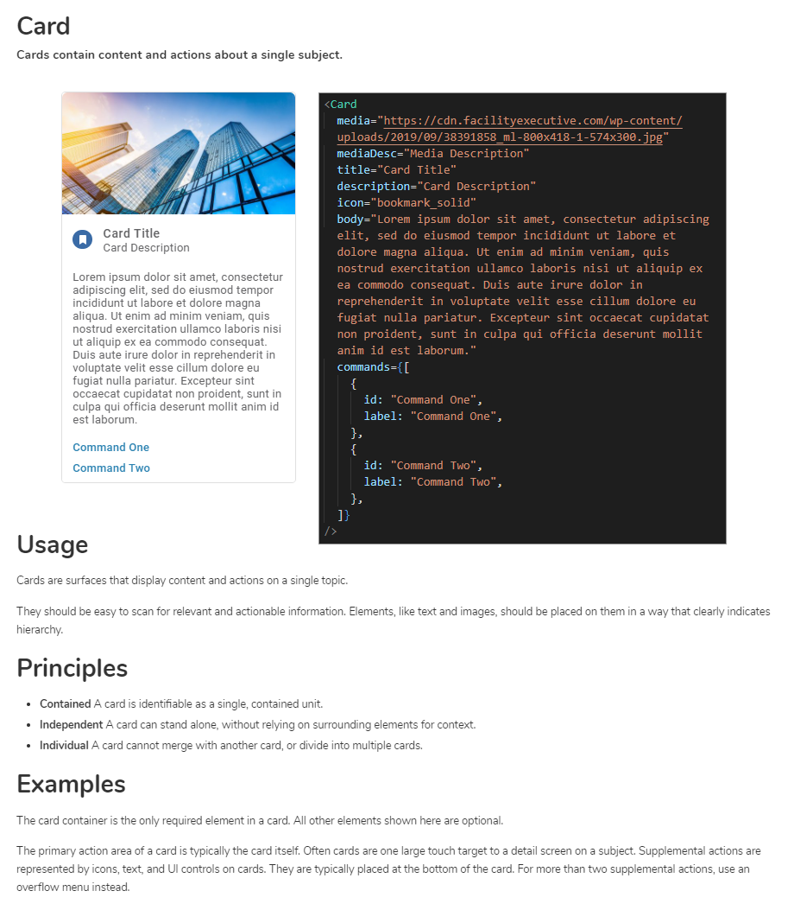

Design Systems
Designing enterprise products at scale requires organization, efficiency,
and predictability. I created a design system to provide guidance and
establish design principles to our product and development teams.
FLAN Design System
FLAN is LightBox's Design Language System for products and experiences.
With the LightBox Design Language as its foundation, the system consists
of working code, design tools, resources, and human interface guidelines.
The main Property view for LightBox's initial product launch...built
entirely from components.
Integrating UI into the Build Process
Managing output files becomes impossible to maintain as products scale. My
goal was to integrate our UI into the application build process so that
our components could be maintained at a single source. UI development
would follow standard development processes and take advantage of
version-controlled code repositories following a Git workflow. Peer code
reviews along with manual and automated testing of source code would help
product teams gain familiarity and confidence with the system while
squashing bugs and uncovering edge cases.
I wrote up a strategy which led to my current approach to UI architecture
and build processes
here.
(Note: component and element names are specific to the system at the time
of this writing but remain largely relevant to my approach today.)
Building the Design System
This FLAN design system started with myself and a front-end developer
researching and testing available tooling for use in building the system.
We settled on React for our view library, Styled Components was chosen as
the CSS-in-JS solution, and Storybook was used for component development
and documentation.
We built the design system in React instead of design tools like Figma
because we needed a working front-end system quickly for Digital Map
Products' mobile platform. After LightBox acquired us, this work led
directly to its use as the base of the company's initial product release.
I'm now translating the production component library into Figma. Moving
the 'source of truth' into a prototyping environment enables design work
without technical overhead or dependencies. This workflow establishes
clear processes for component requirements, reviews, and versioning.
Development teams can then track system changes and maintain synchronized
presentational front-ends across any view library or framework.
Components
All UI components were written as functional React components making use
of React Hooks. The API was designed to export a standard set of semantic
properties (React props) for predictability across the library. The intent
of the system was to allow for all component variations to be achieved
through configuration alone. Customization was possible but discouraged,
as it can lead to inconsistencies and increased maintenance overhead.
Custom components, unless a case was made for their inclusion, would need
to be maintained outside of the design system.
Using Storybook as a development environment allowed us to build and test
each component in isolation. We could ensure that every component was
semantically correct and adaptive across viewports, browsers, and
operating systems. Accessibility standards (ARIA and WCAG) could be tested
for compliance. Component states could be tested to ensure correct
hierarchies and edge cases were easily caught and reviewed. External tools
were used for visual regression testing to check that the 'bottom-margin'
that was added to the 'Label' component didn't inadvertently break the
'Text Input' component.

Viewing software developers as the end-users of the design system gave us
insight into what was needed for it to be useful during application
development. Onboarding team members turned out to be easier than I
anticipated. The software engineers who were early adopters became the
biggest evangelists of the system. I would often hear developers calling
over their coworkers to show them what the design system could do for
them. They would use phrases such as, "...super, easy..." and "That's it,
that's all you need to do."
What I Learned
Building a design system takes a lot of work and requires a great deal of
up-front planning. However, the simple fact that all component code lives
in a single location makes this approach to UI development infinitely more
scalable and maintainable. Constant collaboration with development teams
not only helps improve overall quality and consistency but also creates a
sense of ownership of the system for those outside the design team.
Along with the practice of UX Design, the need for Design Systems
represents an increased focus on organizational DesignOps. The need for
designers and developers to think strategically is apparent. Applying the
same user-centered approach to the design of systems and processes that we
employ on our customer's experiences will allow design to scale along with
the goals of the product organization.
Having all presentational components flow from a single source is
empowering with respect to their reusability across products. It is
possible to achieve a high level of flexibility through composition and
enhance UI exponentially by introducing new variants to existing elements.
A good design system relies on good architecture with each part of the
system serving a defined purpose. Understanding how each component serves
its purpose and enhances the functions of other parts of the system allows
a design system to scale over time while reducing the cost of maintenance
of the source.
The experience of building a design system and thinking about DesignOps
has me considering the value of creating a system of UX knowledge in a
similar manner. As we accumulate knowledge related to our users and their
needs, it would seem prudent to find a way to manage the accumulation of
this knowledge so that it can be revised and repurposed. Over time, many
of our products will eventually have more in common than not. It would be
beneficial to plan for success by building on what we've learned and
making a practice of sharing that knowledge throughout the organization.